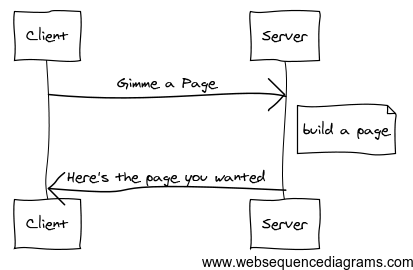
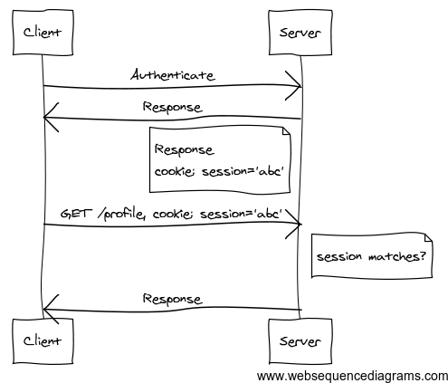

Backbone.js: Sessions and Authentication
Vote on HN TweetRepublished from Opperator blog
Building an API driven Javascript app brings about challenges for authentication that I've taken for granted when working with traditional http frameworks. In this post, I'll outline the basic concepts of what a session is, and how we manage sessions with Backbone.js.
HTTP is a stateless protocol. This means that nothing is remembered from one request to the next. This is great for normal content sites, but lacking when building a webapp. A normal HTTP request lifecycle looks like this:

But for webapps, we need to have a concept of a logged in user and unauthenticated user. Web frameworks hide this in a Session abstraction. The gist of how an authentication request flow works look like:

First a user will submit a login form to the backend. Instead of just returning a response, the backend will generate and remember a session id that it can use to look up this particular login for later requests. This session id is passed back to the client as a cookie value.
Now whenever the client makes a request, the cookie will also be sent to the backend. The backend can then check to value to know whether the user is authenticated and authorized to access the resource they're requesting.
With the theory part out of the way, here's how we structured authentication in Backbone.js. First, we created a Session model.
App.Models.Session = Backbone.Model.extend
defaults:
access_token: null,
user_id: null
initialize: ->
@load()
authenticated: ->
Boolean(@get("access_token"))
# Saves session information to cookie
save: (auth_hash)->
$.cookie('user_id', auth_hash.id)
$.cookie('access_token', auth_hash.access_token)
# Loads session information from cookie
load: ->
@set
user_id: $.cookie('user_id')
access_token: $.cookie('access_token')
This model has a simple and straightforward interface. When it's initialized, it looks for an existing login with the jQuery cookie plugin. If it finds this information, it'll set the access_token and user_id for later use. Once an access_token is set, then the authenticated method will return true.
In our main application, we'll have a single entry point for our application that'll route the user the based on whether they're authenticated or not.
App.start = ->
@session = new App.Models.Session()
if @session.authenticated()
# redirect to user page
else
# launch a login form
With this, all of your pages can run App.start() at the bottom of a page to initialize any authentication logic.
Backbone.js makes no assumptions about what you're using for generating sessions in your backend. In our app, we're using oauth authentication, which is why our key is named access_token, but this pattern can be applied to whatever authentication system your backend uses.